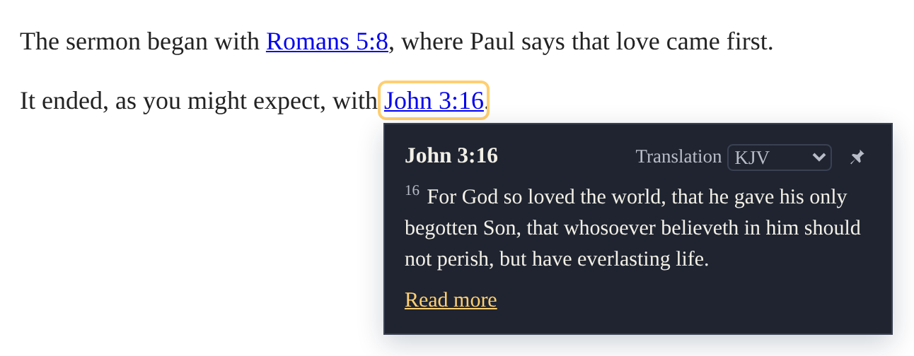

The tooltip, the search and the reader are kept apart from your page's styles, so your CSS can't break them and their CSS can't touch your page. To make them match your site, set these CSS variables on your page. One set styles all three:
| Variable | Sets | Default |
|---|---|---|
--st-accent | Links, the pressed pin, focus outlines; the search button | #0054a5 |
--st-ink | The passage's text | #1d232a |
--st-muted | Verse numbers, the credit, labels | #5b6672 |
--st-paper | The background | #fff |
--st-rule | Borders | #dfe3e6 |
--st-radius | How round the corners are | 6px |
--st-font | The font | The system's interface font (the search and reader take your page's font if this isn't set) |
To style the search alone, use --st-search-accent, --st-search-ink, --st-search-muted, --st-search-rule, --st-search-background and --st-search-radius, which win over the shared ones, --st-search-bar for the reader's bar (sky blue, #44c8f5, by default) and --st-search-hit for the highlight on matched words (a translucent amber by default). Your page's own variables with other names, such as --ink, are never picked up.
The text of the tooltip is 15 pixels whatever your page's own text size is, and your page's fonts, spacing and other CSS never reach the tooltip: only these variables do.
For example, a dark tooltip with a serif font:
:root {
--st-paper: #1f2430;
--st-ink: #f2efe6;
--st-muted: #b8bcc8;
--st-rule: #3a4152;
--st-accent: #ffcf70;
--st-radius: 0;
--st-font: Georgia, serif;
}
The links themselves are ordinary links in your page, with the class st-ref, so your own CSS styles them:
a.st-ref { text-decoration-style: dotted; }